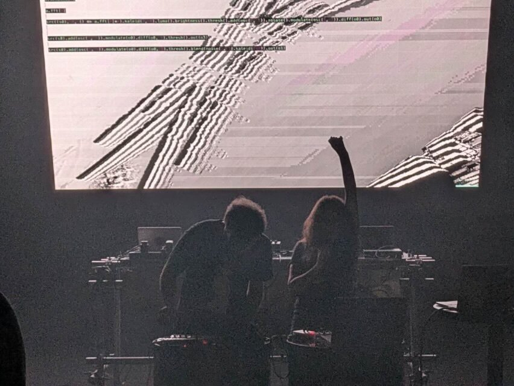

Organizing a Visceral Realists performance is just like organizing a performance for any other band or musical act. Simply book your gig as normal and use the name "Visceral Realists". During the performance observe the Specification for Visceral Realism.

Visceral Realists live at the International Conference on Live Coding, Shanghai 2024
The key words MUST, MUST NOT,
REQUIRED, SHALL, SHALL NOT,
SHOULD, SHOULD NOT, RECOMMENDED,
MAY, and OPTIONAL in this document are to be
interpreted as described in
RFC 2119.
Visceral Realism MUST be performed by more than one person.
Solo performances are not considered Visceral Realism.
Visceral Realism MUST NOT be boring. Visceral Realists
MAY interpret this however they choose.
Visceral Realists MUST use only open source software during
performances. Commercial software or traditional musical instruments
MUST NOT be used.
Visceral Realists MAY synchronize their computers during
performances.
Visceral Realists MAY use MIDI controllers. Usage
SHOULD attempt to be unconventional, for example traditional
"soloing" on a MIDI keyboard SHOULD be discouraged.
Visceral Realists MUST NOT use audio hardware devices.
Visceral Realists MAY use everyday objects as sound-producing
"accessories" during performances provided they are live-recorded or
processed via computer. For example, an office stapler is acceptable, a
guitar effects pedal or drum machine is not.
Visceral Realists MUST show their work, either by using a
projector or printed documentation.
Visceral Realism MUST NOT be merchandised. Visceral Realists
can produce and sell merch under other names but no one may produce
merchandise under the branding "Visceral Realists".
Visceral Realists as a brand MUST NOT be used as a name or
handle on social media platforms. For example @visceralrealists is not
permitted to be used by anyone. Hashtags MAY be used instead.
Visceral Realists MUST observe a
Code of Conduct
whenever performing or acting publically as a Visceral Realist.
The name "Visceral Realism" was coined as a poetry movement in the 1998 novel The Savage Detectives by Roberto Bolaño. Visceral Realists everywhere are grateful for its use.